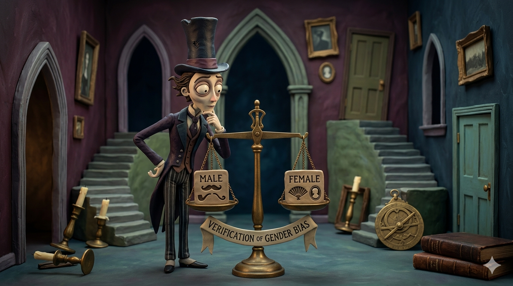

Research Discoveries Overview
This research summarizes three core findings regarding LLM Social Equity, demonstrating the complete process from identifying problems to implementing technical solutions.
Discovery 1: Verification of Gender Bias
Confirmed that DeepSeek V3.2 exhibits "micro-biases" in persuasive tasks by automatically adjusting its tone based on the recipient's gender. It tends to use Pathos (emotional) and communal language for women, while favoring Logos (rational) and logical arguments for men.
